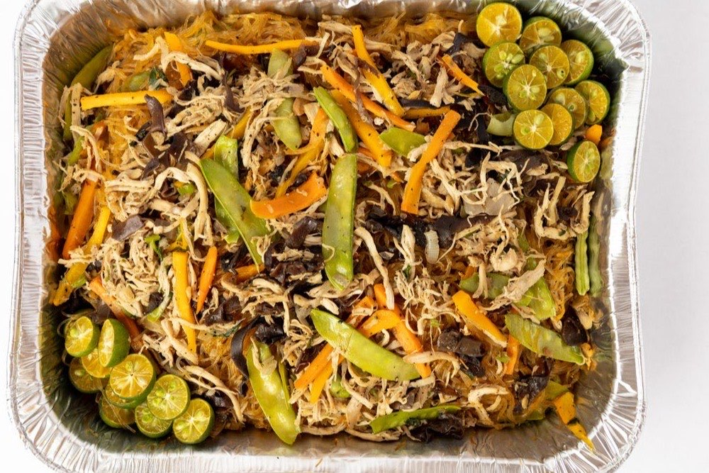

Pancit Canton (Stir-Fried Noodles)
By Sam · Published July 3, 2026 · Updated October 2, 2026

Research-based recipe guide. Times are estimates; check tenderness and doneness as you cook.
Wheat noodles with pork, chicken, shrimp and vegetables. Prepare everything before heating the pan, and add liquid in stages so the noodles soften without becoming soup.
Ingredients
- 250 g dried pancit canton noodles
- 200 g pork, thinly sliced
- 1 chicken breast, thinly sliced
- 100 g shrimp, peeled
- 2 cups shredded cabbage
- 1 carrot, cut into thin strips
- 1 cup snap or snow peas
- 1 onion, sliced
- 3 cloves garlic, minced
- 2 tbsp cooking oil
- Soy sauce, up to 3 tbsp, to taste
- 1 tbsp oyster sauce, optional
- 2 cups chicken broth, plus more if needed
- Calamansi or lemon wedges, to serve
Instructions
- Heat the oil in a wide pan over medium-high heat. Soften the onion and garlic, then add the pork and chicken. Cook the chicken to 74°C / 165°F; color alone is not the doneness check.
- Add the shrimp and cook until opaque. Add part of the broth, part of the soy sauce and the optional oyster sauce; bring to a simmer.
- Add carrot, peas and cabbage. Cook until almost as tender as you want, then lift some vegetables out to return later.
- Add the dried noodles and turn gently with tongs. Follow the noodle packet directions; add the remaining broth little by little only while the noodles need it. Stop when tender and most liquid has been absorbed.
- Return the reserved vegetables, toss and taste. Add more soy sauce only if needed. Serve promptly with calamansi or lemon on the side.
Check which noodles you bought
This recipe is for dried canton noodles, not instant pancit packets with a seasoning sachet or cooked fresh noodles. Packet directions take priority when the product needs a different preparation. Bihon is a different noodle and needs its own timing and liquid adjustment.
The amount of liquid depends on the noodle brand, pan width and how strongly the broth simmers. Keep broth nearby instead of pouring everything in immediately. If noodles are still firm and the pan is dry, add a small amount. If they are already soft, stop cooking even if there is a little sauce left.
Plan a simpler variation
You do not need all three proteins to make a noodle meal. For an easier version, choose one and adjust the cooking stage accordingly. For a vegetable version, use vegetable broth and omit pork, chicken, shrimp and oyster sauce; check noodles and soy sauce labels for dietary restrictions.
Prep is the useful make-ahead step: keep raw meat separate from washed vegetables and ready-to-eat ingredients. Cook the noodles near serving time, because standing in liquid continues to soften them. For a party menu, serve smaller noodle portions alongside lumpiang shanghai rather than assuming each dish must be a full meal. The breakfast guide also explains a different use for garlic rice.
Store and reheat safely
Chill within two hours; one hour above 32°C / 90°F. Refrigerate leftovers for 3–4 days. Reheat to 74°C / 165°F.
Frequently Asked Questions
Do I need to boil canton noodles first?
For the dried noodles in this guide, they cook in the seasoned liquid. Check the package, because fresh and instant products have different instructions.
Why did the noodles become mushy?
They may have absorbed too much liquid or cooked too long. Use less liquid at a time for the next batch and stop once the texture is right.
Sources and recipe context
Vanjo Merano: Pancit Canton provides a published preparation to compare with this editorial guide; variations and quantities differ. Safety references are linked above. Send a correction.
Gabay na batay sa pagsasaliksik. Tantiya ang oras; suriin ang lambot at pagkaluto.
Noodles na trigo na may baboy, manok, hipon, at gulay. Ihanda ang lahat bago painitin ang kawali at paunti-unti ang sabaw para lumambot nang hindi nagiging sopas.
Mga sangkap
- 250 g tuyong pancit canton noodles
- 200 g baboy, manipis ang hiwa
- 1 dibdib ng manok, manipis ang hiwa
- 100 g hipon, binalatan
- 2 tasang ginayat na repolyo
- 1 karot, manipis na pahabang hiwa
- 1 tasang sitsaro
- 1 sibuyas, hiniwa
- 3 butil ng bawang, tinadtad
- 2 kutsarang mantika
- Toyo, hanggang 3 kutsara, ayon sa lasa
- 1 kutsarang oyster sauce, opsyonal
- 2 tasang sabaw ng manok, dagdagan kung kailangan
- Calamansi o lemon, panghain
Paraan ng pagluto
- Painitin ang mantika sa malapad na kawali sa katamtamang mataas na apoy. Palambutin ang sibuyas at bawang, saka idagdag ang baboy at manok. Lutuin ang manok sa 74°C / 165°F; hindi kulay lamang ang batayan.
- Idagdag ang hipon at lutuin hanggang hindi na translucent. Ilagay ang bahagi ng sabaw, toyo, at opsyonal na oyster sauce; pakuluan nang mahina.
- Ilagay ang karot, sitsaro, at repolyo. Lutuin hanggang halos sa gustong lambot, saka alisin ang bahagi para ibalik mamaya.
- Ilagay ang tuyong noodles at marahang baligtarin gamit ang sipit. Sundin ang pakete; paunti-unting idagdag ang natitirang sabaw kapag kailangan. Itigil kapag malambot at nasipsip na ang karamihan ng sabaw.
- Ibalik ang itinabing gulay, haluin, at tikman. Dagdagan ng toyo kung kailangan. Ihain agad kasama ng calamansi o lemon.
Suriin ang biniling noodles
Para ito sa tuyong canton noodles, hindi sa instant pancit na may seasoning sachet o lutong sariwang noodles. Sundin muna ang pakete kung may ibang paghahanda ang produkto. Iba ang bihon at kailangan ng sariling oras at dami ng sabaw.
Depende sa tatak, lapad ng kawali, at lakas ng pagkulo ang likido. Magtabi ng sabaw sa halip na ibuhos agad lahat. Kung matigas pa at tuyo ang kawali, dagdagan nang kaunti. Kung malambot na, itigil kahit may kaunting sarsa.
Magplano ng mas simpleng bersyon
Hindi kailangan ang tatlong karne para sa noodle meal. Pumili ng isa at baguhin ang yugto ng pagluto. Para sa gulay lamang, gumamit ng vegetable broth at alisin ang baboy, manok, hipon, at oyster sauce; suriin ang label ng noodles at toyo para sa mga bawal.
Paghahanda ang kapaki-pakinabang na gawin nang maaga: ihiwalay ang hilaw na karne sa hinugasang gulay at pagkaing handa nang kainin. Lutuin ang noodles malapit sa paghain dahil patuloy itong lumalambot sa sabaw. Sa party, maaaring mas maliit na pancit kasama ng lumpiang shanghai. Ipinaliliwanag din ng gabay sa almusal ang ibang gamit ng sinangag.
Ligtas na pagtatago at pag-init
I-refrigerate sa loob ng dalawang oras; isang oras kapag higit sa 32°C / 90°F. Itago ang tira nang 3–4 araw. Initin sa 74°C / 165°F.
Mga madalas na tanong
Kailangan bang pakuluan muna ang canton?
Ang tuyong noodles dito ay niluluto sa tinimplahang sabaw. Suriin ang pakete dahil iba ang tagubilin sa fresh at instant.
Bakit naging malata?
Maaaring sobrang likido o sobrang tagal ng pagluto. Paunti-unti ang sabaw sa susunod at itigil kapag tama na ang tekstura.
Mga sanggunian
May nailathalang paraan ang Vanjo Merano: Pancit Canton na maaaring ihambing sa gabay na ito; magkakaiba ang bersyon at dami. Naka-link sa itaas ang sanggunian sa kaligtasan. Magpadala ng pagwawasto.